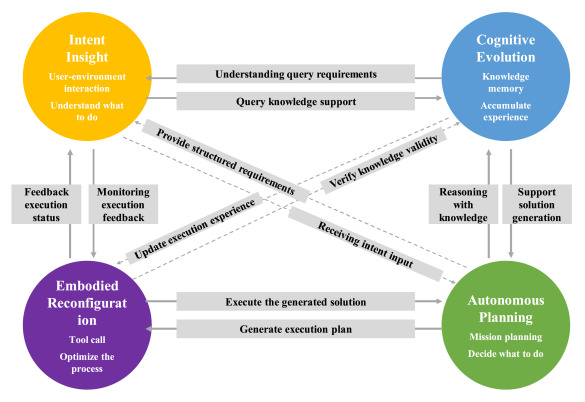
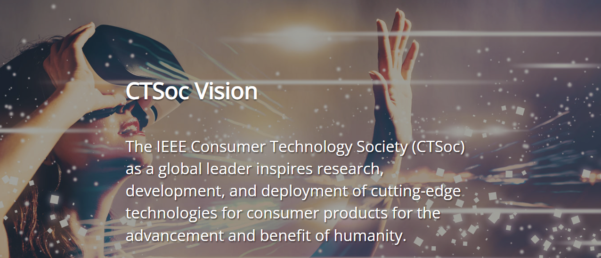
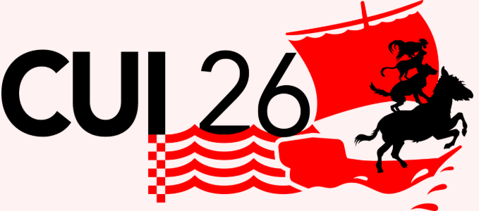
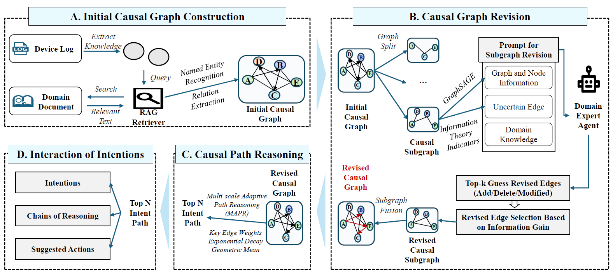
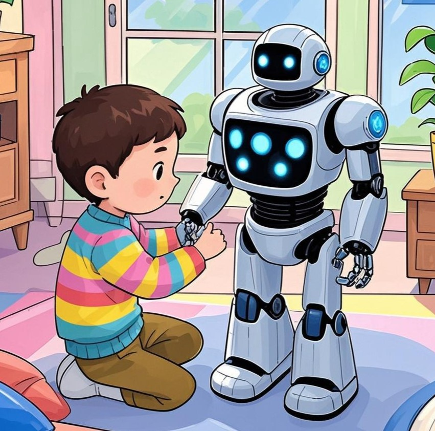
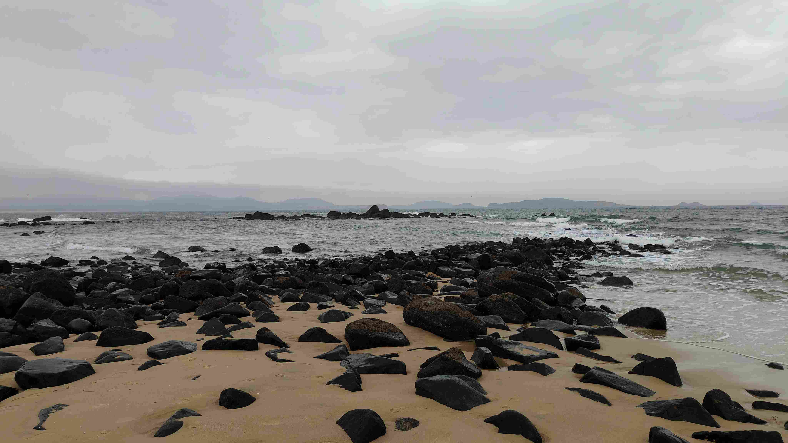

R / 01↗
Brain Function
& Cognition
- Physiological + psychological measurement
- Brain functional analysis
- Cognitive state modeling
Personal Informatics System Lab
We explore how people perceive, think, act, and collaborate—then translate those insights into human-centered intelligent systems.
Explore our research
Artificial intelligence is increasingly good at modeling what people have in common. Our work begins where the averages stop.
People differ in psychological activity, cognitive process, physical capability, and decision-making. PIS Lab studies individuals inside complex social systems and develops the methods needed to make intelligent products, services, and environments genuinely human-centered.
We connect informatics, cognitive science, design, and engineering to address the long tail that foundation models can miss.
From signals in the brain to behavior in the world, our research connects understanding with intervention.
Applied across
Recent research, publications, and community updates from PIS Lab.

A framework for connecting intent insight, cognitive evolution, autonomous planning, and embodied reconfiguration.
↗


By Hongwei Jiang et al.
Researchers, collaborators, students—and one unusually powerful administrator.
Lab administrator
Collaborator

Collaborator
Research assistant
Research assistant
Research assistant
Research assistant
Beautiful moments we have experienced—inside and outside the lab.


Publication record
Work with us
We welcome students, collaborators, and partners who care about building intelligent systems around real human differences.
poly.zhsun@outlook.com